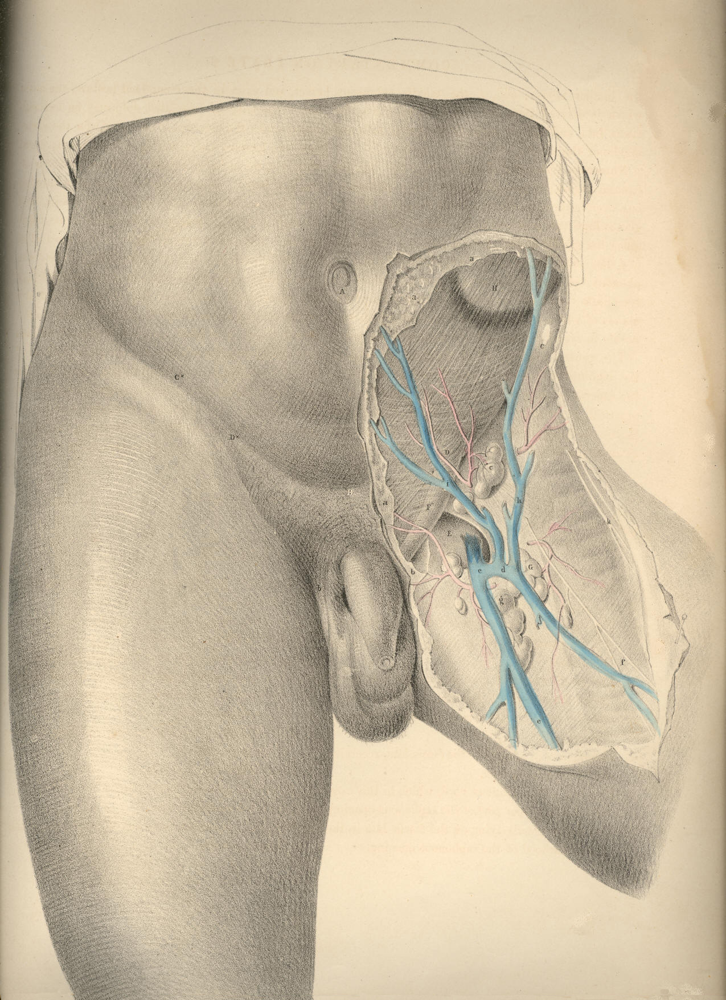

SURGICAL ANATOMY by JOSEPH MACLISE
COMMENTARY ON PLATE 27.
THE SURGICAL DISSECTION OF THE SUPERFICIAL BLOODVESSELS ETC.
OF THE INGUINO-FEMORAL REGION.
Hernial protrusions are very liable to occur at the inguino-femoral
region; and this fact has led the surgeon to study the anatomical
relations of this part with more than ordinary care and patience. So
minutely has he dissected every structure proper to this locality, and
so closely has he investigated every possible condition of it as being
the seat of hernial, that the only novelty which now remains to be
sought for is that of a simplification of the facts, already known to be
far too much obscured by an unwieldy nomenclature, and a useless detail
of trifling evidence. And it would seem that nothing can more directly
tend to this simplification, than that of viewing the inguinal and
femoral regions, not separately, but as a relationary whole. For as both
regions are blended together by structures which are common to both, so
do the herniae which are described as being proper to either region,
occur in such close connexion as at times to render it very difficult to
distinguish between them.
The human species is, of all others, most subject to hernial in the
groin. The erect attitude of the human form, and the fact that many of
its more powerful muscular efforts are performed in this posture, cause
its more frequent liability to the accidents called abdominal herniae or
ruptures.
The viscera of the abdomen occupy this cavity completely, and indeed
they naturally, at all times, subject the abdominal parietes to a state
of constant pressure, as may be proved by their escape from the abdomen
in cases of large wounds of this region. In the erect posture of the
body this pressure is increased, for the viscera now gravitate and force
downwards and forwards against the abdominal parietes. In addition to
this gravitating force, another power impels the viscera from above
downwards--namely, that of the muscles of the trunk, and the principal
agent amongst these is the diaphragm. The lungs, again, expanding above
the diaphragm, add also to the gravitation of the abdominal contents,
and these, under the pressure thus accumulated, occasionally make an
exit for themselves at the groins, which are the weakest and most
depending parts of the abdomen.
Herniae are variously named in accordance with the following
circumstances--viz., the precise locality at which they occur--the size
and form of the tumour--the time of life at which they happen. Sexual
peculiarities do not serve to distinguish herniae, though it is true
that the inguinal form, at the part D F, occurs more commonly in the
male, whilst the crural form, at the opening E, happens more frequently
in the female.
The most common forms of herniae happen at those localities where the
abdominal walls are traversed by the bloodvessels on their way to the
outstanding organs, and where, in consequence, the walls of the abdomen
have become weakened. It also happens, that at these very situations the
visceral pressure is greatest whilst the body stands erect. These
localities are, A, the umbilicus, a point characterized as having given
passage (in the foetal state) to the umbilical vessels; D, the place
where the spermatic vessels and duct pass from the abdomen to the
testicle; and immediately beneath this, the crural arch, which gives
exit to the crural vessels. Herniae may happen at other localities, such
as at the thyroid aperture, which transmits the thyroid vessels; and at
the greater sacrosciatic notch, through which the gluteal vessels pass;
and all regions of the abdominal walls may give exit to intestinal
protrusion in consequence of malformations, disease, or injury. But as
the more frequent varieties of herniae are those which traverse the
localities, A, D, E, and as these, fortunately, are the most manageable
under the care of the surgical anatomist, we proceed to examine the
structures concerned in their occurrence.
A direct opening from within outwards does not exist in the walls of the
abdomen; and anatomy demonstrates to us the fact, that where the
spermatic cord, D F, and the femoral vessels, pass from the abdomen to
the external parts, they carry with them a covering of the several
layers of structures, both muscular and membranous, which they encounter
in their passage. The inguinal and crural forms of herniae which follow
the passages made by the spermatic cord, and the crural vessels, must
necessarily carry with them the like investments, and these are what
constitute the coverings of the herniae themselves.
The groin in its undissected state is marked by certain elevations and
depressions which indicate the general relations of the subcutaneous
parts. The abdomen is separated from the thigh by an undulating grooved
line, extending from C*, the point of the iliac bone, to B, the
symphysis pubis This line or fold of the groin coincides exactly with
the situation of that fibrous band of the external oblique muscle named
Poupart's ligament. From below the middle of this abdomino-femoral
groove, C B, another curved line, D, b,
springs, and courses obliquely,
inwards and downwards, between the upper part of the thigh and the
pubis, to terminate in the scrotum. The external border of this line
indicates the course of the spermatic cord, D F, which can be readily
felt beneath the skin. In all subjects, however gross or emaciated they
may happen to be, these two lines are readily distinguishable, and as
they bear relations to the several kinds of rupture taking place in
these parts, the surgeon should consider them with keen regard. A
comparison of the two sides of the figure, PLATE 27, will show that the
spermatic cord, D F, and Poupart's ligament, C B, determine the shape of
the inguino-femoral region. When the integument with the subcutaneous
adipose tissue is removed from the inguino-femoral region, we expose
that common investing membrane called the superficial fascia. This
fascia, a a a, stretches over
the lower part of the abdomen and the
upper part of the thigh. It becomes intimately attached to Poupart's
ligament along the ilio-pubic line, C B; it invests the spermatic cord,
as shown at b, and descends
into the scrotum, so as to encase this part.
Where this superficial fascia overlies the saphenous opening, E, of the
fascia lata, it assumes a "cribriform" character, owing to its being
pierced by numerous lymphatic vessels and some veins. As this
superficial fascia invests all parts of the inguino-femoral region, as
it forms an envelope for the spermatic cord, D F, and sheathes over the
saphenous opening, E, it must follow of course that wherever the hernial
protrusion takes place in this region, whether at D, or F, or E, or
adjacent parts, this membrane forms the external subcutaneous covering
of the bowel.
There is another circumstance respecting the form and attachments of the
superficial fascia, which, in a pathological point of view, is worthy of
notice--viz., that owing to the fact of its enveloping the scrotum,
penis, spermatic cord, and abdominal parietes, whilst it becomes firmly
attached to Poupart's ligament along the abdomino-femoral fold, B C, it
isolates these parts, in some degree, from the thigh; and when urine
happens to be from any cause extravasated through this abdominal-scrotal
bag of the superficial fascia, the thighs do not in general participate
in the inflammation superinduced upon such accident.
The spermatic cord, D, emerges from the abdomen and becomes definable
through the fibres of the sheathing tendon of the external oblique
muscle, H, at a point midway between the extremities of the ilio-pubic
line or fold. In some cases, this place, whereat the cord first
manifests itself in the groin, lies nearer the pubic symphysis; but
however much it may vary in this particular, we may safely regard the
femoro-pubic fold, D, b, as
containing the cord, and also that the place
where this fold meets the iliopubic line, C B, at the point D, marks the
exit of the cord from the abdomen.
The spermatic cord does not actually pierce the sheathing tendon of the
external oblique muscle at the point D, and there does not, in fact,
exist naturally such an opening as the "external abdominal ring," for
the cord carries with it a production of the tendon of the external
oblique muscle, and this has been named by surgical anatomists the
"intercolumnar fascia," [Footnote] the "spermatic fascia." The fibres of
this spermatic fascia are seen at D F, crossing the cord obliquely, and
encasing it. This covering of the cord lies beneath the spermatic
envelope formed by, a b, the
superficial fascia; and when a hernial
protrusion descends through the cord, both these investing membranes
form the two outermost envelopes for the intestine in its new and
abnormal situation.
[Footnote: On referring to the works of Sir Astley Cooper, Hesselbach,
Scarpa, and, others, I find attempts made to establish a distinction
between what is called the "intercolumnar fascia" and the "spermatic
fascia," and just as if these were structures separable from each other
or from the aponeurotic sheath of the external oblique muscle. I find,
in like manner, in these and other works, a tediously-laboured account
of the superficial fascia, as being divisible into two layers of
membrane, and that this has given rise to considerable difference of
opinion as to whether or not we should regard the deeper layer as being
a production of the fascia lata, ascending from the thigh to the
abdomen, or rather of the membrane of the abdomen descending to the
thigh, &c. These and such like considerations I omit to discuss
here;
for, with all proper deference to the high authority of the authors
cited, I dare to maintain, that, in a practical point of view, they arc
absolutely of no moment, and in a purely scientific view, they are, so
far as regards the substance of the truth which they would reveal,
wholly beneath the notice of the rational mind. The practitioner who
would arm his judgment with the knowledge of a broad fact or principle,
should not allow his serious attention to be diverted by a pursuit after
any such useless and trifling details, for not only are they unallied to
the stern requirements of surgical skill, but they serve to degrade it
from the rank and roll of the sciences. Whilst operating for the
reduction of inguinal hernia by the "taxis" or the bistoury, who is
there that feels anxiety concerning the origin or the distinctiveness of
the "spermatic fascia?" Or, knowing it to be present, who concerns
himself about the better propriety of naming it "tunica vaginalis
communis," "tunique fibreuse du cordon spermatique," "fascia
cremasterica," or "tunica aponeurotica?"]
The close relations which the cord, D F, bears to the saphenous opening,
E, of the fascia lata, should be closely considered, forasmuch as when
an oblique inguinal hernia descends from D to F, it approaches the
situation of the saphenous opening, E, which is the seat of the femoral
or crural hernia, and both varieties of hernia may hence be confounded.
But with a moderate degree of judgment, based upon the habit of
referring the anatomy to the surface, such error may always be avoided.
This important subject shall be more fully treated of further on.
The superficial bloodvessels of the inguino-femoral region are, e e,
the saphenous vein, which, ascending from the inner side of the leg and
thigh, pierces the saphenous opening, E, to unite with the femoral vein.
The saphenous vein, previously to entering the saphenous opening,
receives the epigastric vein, i,
the external circumflex ilii vein, h,
and another venous branch, d,
coming from the fore part of the thigh. In
the living body the course of the distended saphenous vein may be traced
beneath the skin, and easily avoided in surgical operations upon the
parts contained in this region. Small branches of the femoral artery
pierce the fascia lata, and accompany these superficial veins. Both
these orders of vessels are generally divided in the operation required
for the reduction of either the inguinal or the femoral strangulated
hernia; but they are, for the most part, unimportant in size. Some
branches of nerves, such as, k,
the external cutaneous, which is given
off from the lumbar nerves, and, f, the
middle cutaneous, which is
derived from the crural nerve, pierce the fascia lata, and appear upon
the external side and middle of the thigh.
Numerous lymphatic glands occupy the inguino-femoral region; these can
be felt, lying subcutaneous, even in the undissected state of the parts.
These glands form two principal groups, one of which, c, lies along the
middle of the inguinal fold, C B; the other, G g, lies scattered in the
neighbourhood of the saphenous opening. The former group receive the
lymphatic vessels of the generative organs; and the glands of which it
is composed are those which suppurate in, syphilitic or other affections
of these parts.
The general relations which the larger vessels of the inguino-femoral
region bear to each other and to the superficies, may be referred to in
PLATE 27, with practical advantage. The umbilicus, A, indicates pretty
generally the level at which the aorta bifurcates on the forepart of the
lumbar vertebrae. In the erect, and even in the recumbent posture, the
aorta may (especially in emaciated subjects) be felt pulsating under the
pressure of the hand; for the vertebrae bear forward the vessel to a
level nearly equal with, C C, the anterior superior spinous processes of
the iliac bones. If a gunshot were to pass through the abdomen,
transversely, from these points, and through B, it would penetrate the
aorta at its bifurcation. The line A B coincides with the linea alba.
The oblique lines, A D, A D,* indicate the course of the iliac vessels.
The point D marks the situation where the spermatic vessels enter the
abdomen; and also where the epigastric artery is given off from the
external iliac. The most convenient line of incision that can be made
for reaching the situation of either of the iliac arteries, is that
which ranges from C, the iliac spine, to D, the point where the
spermatic cord enters the abdomen. The direct line drawn between D and G
marks the course of the femoral artery, and this ranges along the outer
border, E, of the saphenous opening.
DESCRIPTION OF PLATE 27.
A. The umbilicus.
B. The upper margin of the pubic symphysis.
C. The anterior superior spine of the left iliac bone. C*, the situation
of the corresponding part on the right side.
D. The point where, in this subject, the cord manifested itself beneath
the fibres of the external oblique muscle. D*, a
corresponding part on
the opposite side.
E. The saphenous opening in the fascia lata, receiving e, the saphenous
vein.
F. The lax and pendulous cord, which in this case, overlies the upper
part of the saphenous opening.
G. Lymphatic glands lying on the fascia lata in the neighbourhood of the
saphenous opening.
H. The fleshy part of the external oblique muscle.
a a a. The superficial fascia
of the abdomen.
b. The same fascia forming an
envelope for the spermatic cord and
scrotum.
c. Inguinal glands lying near
Poupart's ligament.
d. A common venous trunk,
formed by branches from the thigh and abdomen,
and joining--
e e. The saphenous vein.
f. The middle cutaneous
nerve, derived from the anterior crural
nerve.
g. Femoral lymphatic glands.
h. Superficial external iliac
vein.
i. Superficial epigastric vein.
k. External cutaneous branches
of nerves from the lumbar plexus.

PLATE 27
COMMENTARY ON PLATES 28
& 29